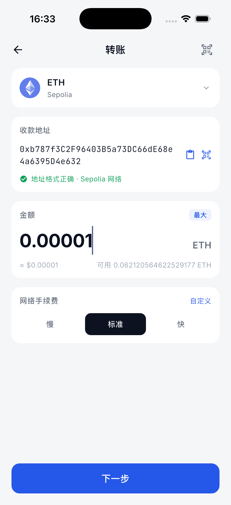
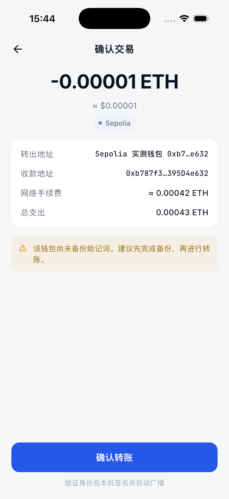
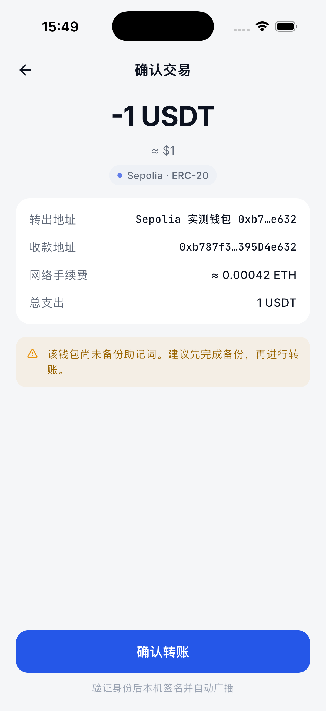
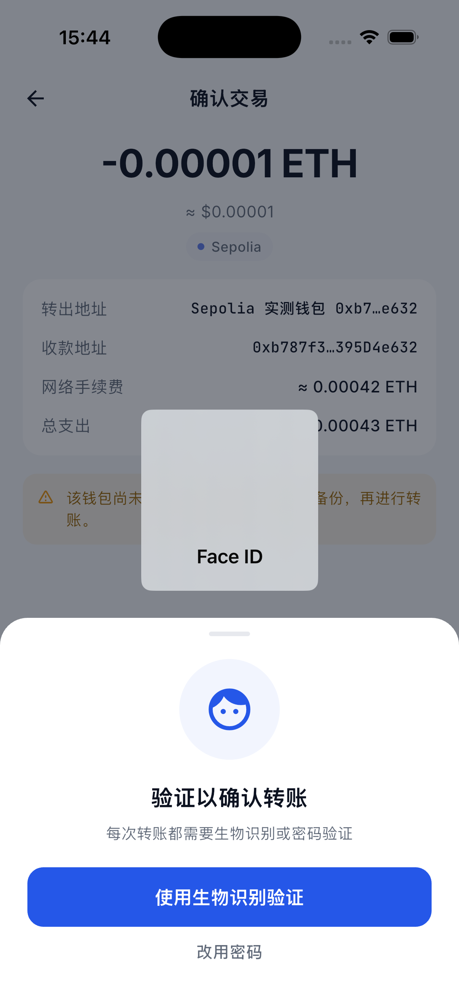
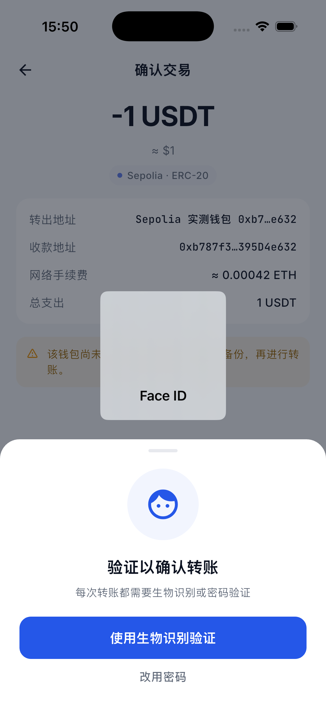
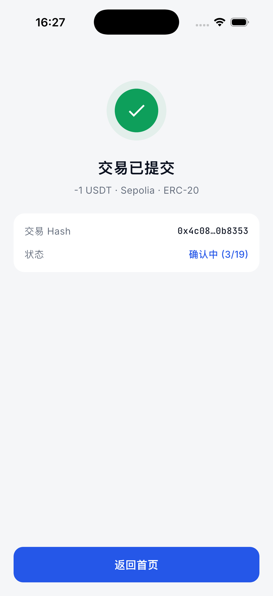

已检查截图 · iPhone 17 Pro · iOS 26.2
正常 App UI 转账实测
本报告不再使用黑色 Integration Testing 页面。截图全部来自 KT Wallet 正常界面，覆盖真实余额、输入、确认、App 授权、WalletCore Face ID、本地签名、广播与成功结果。
✓ ETH 与 Test USDT 均通过
两笔交易已再次从 Sepolia Etherscan 页面验证为 Success；本轮测试输出为 All tests passed。
1. 真实余额与转账输入

2. 交易确认


3. 身份验证与 WalletCore 签名


4. 广播结果

仍发现的问题
首页首屏的原生币列表在部分 RPC 刷新轮次仍显示 --，而转账页能够读取真实 ETH 可用余额并完成发送。说明签名/发送链路已经通过，但首页余额聚合的刷新与 RPC 容错仍需单独修复，不能宣称整个余额展示完全正常。